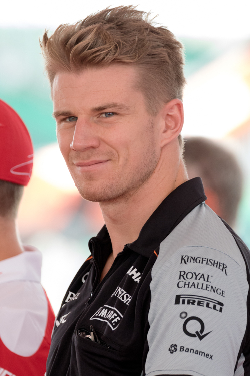

História
Haas Formula LLC, atualmente competindo como MoneyGram Haas F1 Team (anteriormente conhecido como Haas Racing Developments e Haas Formula), é uma equipe de Fórmula 1 estabelecida por Gene Haas em abril de 2014. A equipe planejou sua estreia no início da temporada de 2015, mas optou por adiar a sua entrada para a temporada de 2016.
A equipe tem sede em Kannapolis, Carolina do Norte - 50 quilômetros de Charlotte[16] - ao lado da equipe irmã, participante da NASCAR, a Stewart-Haas Racing, apesar das duas equipes serem tratadas como entidades separadas. A equipe também estabeleceu uma segunda base avançada em Banbury, Oxfordshire, a fim de fornecer melhor assistência aos carros entre as corridas durante a temporada europeia.
Pilotos
-
Nico Hulkenberg
- Nacionalidade: Alemanha
- Idade: 35 anos
- Corridas: 193
- Vitórias: 0
- Pódios: 0
- Campeão: 0 vez
-
Kevin Magnussen
- Nacionalidade: Dinamarca
- Idade: 30 anos
- Corridas: 151
- Vitórias: 0
- Pódios: 1
- Campeão: 0 vez
*Dados do dia 26/06/2023